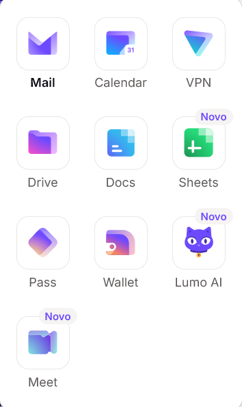

CONTINUAÇÃO DO GUIA TAILS · 16/10/2026
Tails e Llama no pen drive: IA local, instalação e primeiros passos.
Leve o sistema e um modelo pequeno no USB e use o computador para gerar respostas sem depender de um serviço de IA na nuvem. Este tutorial explica a preparação, os arquivos, a configuração e o teste offline, um passo de cada vez.
Antes de começar
Este guia não foi executado em uma sessão real de Tails com pen drive neste projeto. Os passos usam a documentação dos componentes, mas compatibilidade, compilação, desempenho e preservação das proteções precisam ser verificados no seu equipamento. Para uso de alto risco, mantenha um Tails padrão e experimente IA em um ambiente separado.
Comece pelo guia Tails: instalação e primeiros passos. Se o seu pen drive já está pronto, não o formate de novo. Faça backup do armazenamento persistente antes de acrescentar ferramentas.
1. Tails, Llama, llama.cpp e Lumo: cada um faz uma coisa
- Tails: sistema que inicia pelo USB e oferece um ambiente voltado à privacidade.
- Llama: família de modelos da Meta. O arquivo de modelo contém os parâmetros usados para gerar texto; não é um aplicativo nem uma pesquisa ao vivo na internet.
- llama.cpp: programa que carrega modelos compatíveis e faz o cálculo no computador. Aqui usaremos o terminal e a CPU, sem servidor web.
- Ollama: outra ferramenta de execução e gerenciamento de modelos. Não é o mesmo produto e seu instalador Linux padrão não é uma instalação portátil pronta para Tails.
- Lumo AI: serviço de IA da Proton, apresentado na imagem enviada. É online e não substitui o Llama local deste guia.
Pense no USB como uma mochila: ele leva o sistema e os arquivos. Quem faz o trabalho é o processador do computador, usando a memória RAM. Um pen drive maior não aumenta automaticamente a capacidade de cálculo.
2. Escolha o equipamento e reserve espaço
| Item | Planejamento para este experimento |
|---|---|
| Computador | PC x86-64 compatível com Tails e inicialização USB; não celular, tablet ou Mac Apple Silicon. |
| Memória | Planeje 8 GB de RAM ou mais para começar com 1B quantizado. É uma estimativa editorial conservadora, não requisito oficial nem garantia. Compilar também consome memória. |
| Pen drive | Planeje 32 GB ou mais; 64 GB oferece folga para ferramentas, código e arquivos. São sugestões de capacidade para o conjunto, não novos requisitos do Tails. |
| Modelo de exemplo | Llama 3.2 1B Instruct em GGUF Q4_K_M, aproximadamente 808 MB de arquivo. Memória necessária em execução é maior que o tamanho do arquivo. |
| Conexão inicial | Necessária para obter pacotes, código e modelo. A geração de texto será testada depois com a rede desligada. |
Confira os requisitos reais do Tails ↗. Use primeiro um modelo pequeno; modelos de 8B ou maiores não são uma boa primeira experiência num computador com pouca RAM.
3. Prepare a persistência e a senha administrativa
- Inicie Tails pelo pen drive e desbloqueie seu armazenamento persistente. Se ainda não o criou, siga o assistente do Tails e guarde a senha com segurança.
- Ative os recursos de arquivos pessoais e de software adicional que pretende usar. Nem toda configuração de um programa é salva automaticamente por esse recurso.
- Para instalar os pacotes de compilação, defina uma senha de administração na tela de boas-vindas antes de entrar na sessão. Essa senha temporária não é a senha da persistência.
- Depois de iniciar, abra o Terminal do Tails e prepare a pasta abaixo. Não execute esses comandos no PowerShell do Windows.
mkdir -p "$HOME/Persistent/IA/modelos"
df -h "$HOME/Persistent"
free -hOs dois últimos comandos mostram espaço em disco e memória; não alteram o sistema. Documentação: armazenamento persistente ↗, opções da persistência ↗ e senha administrativa ↗.
4. Instale as ferramentas de compilação
- Conecte ao Tor usando o assistente normal do Tails.
- Abra Aplicativos → Ferramentas de sistema → Gerenciador de pacotes Synaptic. Os nomes podem variar com a tradução.
- Autentique-se com a senha administrativa da sessão. Procure e selecione
build-essential,cmakeepkg-config, com suas dependências, e aplique. - Quando o Tails oferecer guardar esses pacotes como software adicional, escolha conforme seu planejamento de persistência. Espere concluir antes de seguir.
Use os repositórios já configurados pelo Tails. Não acrescente repositórios aleatórios, não mude o firewall e não instale serviços VPN para tentar corrigir downloads. A equipe Tails alerta que programas adicionais podem comprometer suas proteções e não recebem o mesmo teste do conjunto incluído. Manual de software adicional ↗.
5. Baixe o código e o modelo pelo Tor Browser
Use o Tor Browser incluído. Salve arquivos grandes diretamente em Persistent/IA: fora da persistência, downloads podem consumir a RAM e travar a sessão. Tails moderno permite acesso do Tor Browser às pastas pessoais e persistentes, conforme sua documentação. Download e isolamento do navegador ↗.
Arquivo A: o programa
O código é do projeto oficial llama.cpp ↗. Para tornar o roteiro reproduzível, esta edição fixa a revisão b6334e37e6ef286fc5091a41b6561b2113d915fb. Baixar arquivo-fonte da revisão citada ↗.
- Salve o arquivo em
Persistent/IA. - No gerenciador de arquivos, extraia o arquivo-fonte e renomeie a pasta extraída para
llama.cpp. O arquivoCMakeLists.txtprecisa ficar diretamente dentro dela, sem uma segunda pasta intermediária. - Se já existe uma pasta com esse nome, preserve sua versão anterior e ajuste os caminhos; não a sobrescreva sem backup.
Fixar uma revisão ajuda a repetir os passos, mas não é uma auditoria de segurança. Antes de atualizar no futuro, confira avisos e alterações nas publicações oficiais ↗.
Arquivo B: o modelo
Consulte primeiro o cartão e a licença do modelo original da Meta ↗. O GGUF deste exemplo é uma conversão publicada por bartowski, um terceiro; não é um arquivo GGUF publicado pela própria Meta. Página do publicador da conversão ↗.
- Leia as condições de uso e, se o serviço exigir, as condições da conta. Usar uma conta identificada pode revelar sua identidade ao provedor.
- Baixe somente o arquivo GGUF Q4_K_M da revisão citada ↗, não o repositório inteiro.
- Salve o arquivo em
Persistent/IA/modelos, mantendo o nome exato. Não execute instaladores anexados a modelos de origem desconhecida.
Confira se o arquivo corresponde ao publicado
sha256sum "$HOME/Persistent/IA/modelos/Llama-3.2-1B-Instruct-Q4_K_M.gguf"O resultado deve começar com o SHA-256 abaixo, correspondente ao objeto publicado na revisão 067b946cf014b7c697f3654f621d577a3e3afd1c:
6f85a640a97cf2bf5b8e764087b1e83da0fdb51d7c9fab7d0fece9385611df83Se não coincidir, não use o arquivo: confira a revisão e o download. Comparar o hash detecta divergência; não prova que o modelo seja seguro, imparcial ou factual. O registro completo está em dados deste tutorial.
6. Compile o programa para uso local em CPU
Compilar é transformar o código-fonte em um programa para aquele ambiente. Este caminho evita depender de um binário Ubuntu possivelmente incompatível com as bibliotecas do Tails. Copie o bloco no Terminal do Tails, depois de concluir os passos anteriores:
cd "$HOME/Persistent/IA/llama.cpp"
cmake -S . -B build -DCMAKE_BUILD_TYPE=Release \
-DGGML_NATIVE=OFF -DGGML_CUDA=OFF -DGGML_VULKAN=OFF \
-DGGML_OPENMP=OFF -DBUILD_SHARED_LIBS=OFF \
-DLLAMA_OPENSSL=OFF -DLLAMA_BUILD_APP=OFF \
-DLLAMA_BUILD_TESTS=OFF -DLLAMA_BUILD_EXAMPLES=OFF \
-DLLAMA_BUILD_SERVER=OFF -DLLAMA_BUILD_HTML=OFF
cmake --build build --target llama-cli -j 2Espere cada comando terminar. Se aparecer erro, pare e consulte a seção de problemas; não continue como se a instalação tivesse concluído. O compilador poderá levar vários minutos. O bloco limita a compilação a duas tarefas e pede apenas o alvo de terminal.
As opções desativam GPU, OpenMP, aplicativo unificado, servidor, testes e suporte OpenSSL nesta compilação. BUILD_SHARED_LIBS=OFF evita bibliotecas compartilhadas do projeto, mas não torna o programa universal ou independente das bibliotecas do sistema. GGML_NATIVE=OFF reduz especialização automática para a máquina; não garante funcionamento em todo processador. Fontes: compilação do llama.cpp ↗ e opções da revisão utilizada ↗.
Confira antes de carregar o modelo
./build/bin/llama-cli --helpSe a ajuda abrir, o executável iniciou. Isso ainda não confirma que há memória suficiente para carregar o modelo. Não use sudo para conversar com a IA.
7. Faça a primeira conversa sem internet
- Confirme que os downloads e a instalação terminaram e que o modelo está na persistência.
- Feche o Tor Browser e desconecte todas as redes no Tails: Wi-Fi, Ethernet e eventual compartilhamento USB. Não altere as regras de firewall.
- Execute o comando abaixo. Ele usa um arquivo local, sem o atalho de download
-hfe sem iniciar servidor.
cd "$HOME/Persistent/IA/llama.cpp"
./build/bin/llama-cli \
-m "$HOME/Persistent/IA/modelos/Llama-3.2-1B-Instruct-Q4_K_M.gguf" \
--offline -cnv -c 1024 -n 128 -t 2 -ngl 0--offline pede ao programa o modo offline; não é uma sandbox para programas maliciosos. -cnv ativa conversa, -c 1024 limita o contexto, -n 128 limita a geração, -t 2 usa duas threads e -ngl 0 mantém as camadas na CPU. São valores modestos para o primeiro teste, não uma configuração ideal para todos. Definições das opções na revisão ↗.
Quando aparecer o campo de entrada, experimente: “Explique em português, em três frases simples, a diferença entre memória RAM e espaço no pen drive.” Aguarde a resposta. A primeira carga pode ser lenta; veja se o processo continua ativo antes de interromper. Para encerrar, use Ctrl+C.
O que conta como teste bem-sucedido?
- O modelo termina de carregar, aceita o texto e produz uma resposta com as conexões de rede desligadas.
- A resposta pode conter erros. Um modelo de 1B tem limitações; funcionar offline não comprova qualidade ou verdade.
- Não há necessidade de abrir o navegador, expor uma porta na rede ou modificar o Tor para esse fluxo de terminal.
8. Salve apenas o que precisa e teste a próxima inicialização
A pasta Persistent/IA guarda código, compilação e modelo. Isso não significa que todo histórico da conversa seja salvo automaticamente. Se quiser guardar uma resposta, copie-a para um arquivo na persistência, sabendo que esse arquivo continuará existindo no USB.
- Encerre o programa e desligue o Tails pelo menu.
- Na próxima sessão, desbloqueie a persistência e espere o software adicional necessário terminar de preparar.
- Confira se as pastas e o modelo continuam disponíveis. Repita o comando da conversa com a rede desconectada.
- Se uma atualização do Tails mudar bibliotecas ou ferramentas, talvez seja necessário recompilar. Preserve sua cópia anterior e o registro de revisão.
Faça backup da persistência em mídia separada e guarde a senha com cuidado. Nenhum tutorial recupera uma senha perdida ou impede falha física do pen drive. Não coloque senhas, documentos íntimos ou dados de outras pessoas numa conversa de teste.
9. Problemas frequentes e como reconhecer a causa
| Sintoma | Próximo passo seguro |
|---|---|
cmake: command not found ou compilador ausente | Volte ao Synaptic e confira os pacotes, as dependências e o fim da instalação. |
| Arquivo ou pasta não encontrado | Confira nome, extensão, letras maiúsculas e extração. Os comandos usam Persistent/IA/llama.cpp e Persistent/IA/modelos. |
Processo termina com Killed | É um possível sinal de falta de RAM, não diagnóstico definitivo. Feche outros programas, reduza contexto e examine as mensagens antes de tentar novamente. |
Illegal instruction | Pode haver incompatibilidade de instruções da CPU. Não existe um binário que sirva para todos; consulte a documentação de compilação para seu processador. |
| Mensagem sobre biblioteca ausente | Recompile no Tails atual com as dependências corretas. Não copie bibliotecas aleatórias de outro sistema. |
| Hash diferente ou GGUF inválido | Confirme revisão e integridade. Não renomeie outro formato apenas para parecer um GGUF. |
| Resposta lenta ou em outra língua | Comece com 1B, contexto pequeno e pedido curto em português. Um modelo pequeno pode não seguir bem a instrução. |
| Download bloqueado ou com CAPTCHA | Aguarde, confira a origem e tente novamente pelo Tor Browser. Não use o navegador inseguro nem remova as proteções do Tails como atalho. |
Se seu objetivo principal for usar Ollama com serviço permanente ou interface web, considere um segundo USB com uma distribuição Linux adequada e siga o manual oficial do Ollama ↗. Não trate esse instalador como receita validada para o Tails.
10. Onde entram Proton, VPN e Lumo?
A IA local do tutorial não precisa de conta Proton, assinatura, VPN ou Lumo. Tails usa sua configuração Tor; não acrescente Proton VPN ao Tails como uma melhoria automática. Para Mail, Drive, Pass e outros produtos no seu sistema habitual, leia o guia Proton.
A imagem fornecida mostra o catálogo da Proton. O ícone Lumo AI se refere ao serviço online Lumo ↗, diferente do modelo Llama que acabamos de preparar.

11. Checklist final
- Backup e persistência prontos; nenhum disco errado foi formatado.
- Origem, revisão e licença conferidas; hash do GGUF compatível.
- Compilação sem erro e ajuda do programa acessível.
- Conversa testada com a rede desligada, sem servidor e sem privilégios administrativos.
- Arquivos encontrados após reiniciar; backup e senhas protegidos.
Ferramentas extras não eliminam os riscos de um computador adulterado. Conheça os limites de proteção do Tails ↗. Os downloads deixam registros nos provedores acessados, e arquivos persistentes podem revelar assuntos e identidades se forem expostos.
Fontes, versões e limites desta edição
Use a documentação junto com este roteiro. A montagem descrita é uma proposta de configuração com opções verificadas nas fontes, não uma certificação do Tails nem relato de teste físico. Baixar referências e versões. Para começar do zero, volte a Tails no pen drive.